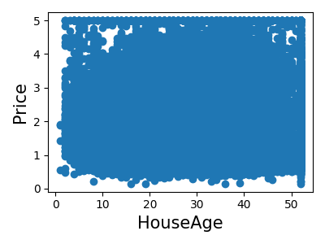
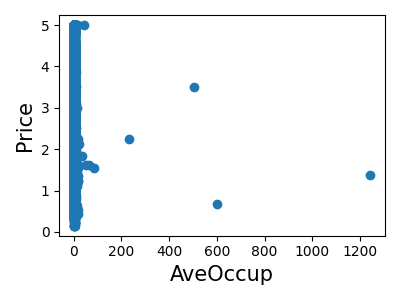
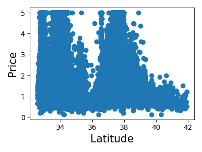

Note
Go to the end to download the full example code
3.4.8.11. A simple regression analysis on the California housing data¶
Here we perform a simple regression analysis on the California housing data, exploring two types of regressors.
from sklearn.datasets import fetch_california_housing
data = fetch_california_housing(as_frame=True)
Print a histogram of the quantity to predict: price
import matplotlib.pyplot as plt
plt.figure(figsize=(4, 3))
plt.hist(data.target)
plt.xlabel("price ($100k)")
plt.ylabel("count")
plt.tight_layout()

Print the join histogram for each feature
for index, feature_name in enumerate(data.feature_names):
plt.figure(figsize=(4, 3))
plt.scatter(data.data[feature_name], data.target)
plt.ylabel("Price", size=15)
plt.xlabel(feature_name, size=15)
plt.tight_layout()
- 
- 
- 
Simple prediction
from sklearn.model_selection import train_test_split
X_train, X_test, y_train, y_test = train_test_split(data.data, data.target)
from sklearn.linear_model import LinearRegression
clf = LinearRegression()
clf.fit(X_train, y_train)
predicted = clf.predict(X_test)
expected = y_test
plt.figure(figsize=(4, 3))
plt.scatter(expected, predicted)
plt.plot([0, 8], [0, 8], "--k")
plt.axis("tight")
plt.xlabel("True price ($100k)")
plt.ylabel("Predicted price ($100k)")
plt.tight_layout()
Prediction with gradient boosted tree
from sklearn.ensemble import GradientBoostingRegressor
clf = GradientBoostingRegressor()
clf.fit(X_train, y_train)
predicted = clf.predict(X_test)
expected = y_test
plt.figure(figsize=(4, 3))
plt.scatter(expected, predicted)
plt.plot([0, 5], [0, 5], "--k")
plt.axis("tight")
plt.xlabel("True price ($100k)")
plt.ylabel("Predicted price ($100k)")
plt.tight_layout()
Print the error rate
RMS: 0.5314909993118918
Total running time of the script: (0 minutes 4.398 seconds)